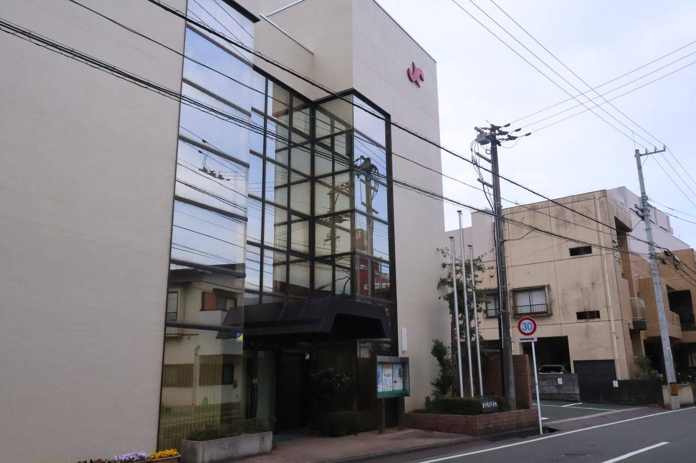

大洲の視点 ・ 出典: ＪＡ愛媛たいき ・ 約5分で読める

要点
「ＪＡたいき」と聞くと、産直市「愛たい菜」を思い浮かべる人が多いと思う。
ディスクロージャー誌（情報開示誌）を読んでみたら、事業の実態はかなり違った。
冒頭のプロフィール欄に、こう書かれている。総資産1,453億円。
正式名称は愛媛たいき農業協同組合。本店は大洲市にある。
総資産1,453億円は、地方の信用金庫に匹敵する規模だ。自己資本比率21.03％というのも、金融機関としてはかなり厚い部類に入る。
沿革を見ると平成11年９月に貯金残高1,000億円を達成と書かれていた。
合併からわずか５か月後だ。ＪＡは農業団体である以前に、貯金・貸出・共済（保険）まで扱う「総合金融機関」でもある。この規模の資金が、大洲と内子のあたりで動いている。
その一方で、令和６年度の決算はかなり厳しい。同じ資料の理事長あいさつに、数字がそのまま書かれていた。
注目したいのは事業利益と経常利益の差だ。本業のもうけである事業利益は5,658万円しかないのに、経常利益は２億3,908万円ある。
差額は本業以外から来ていて、資料には「本支所機能再編に伴う旧本所土地の売却等もありました」と書かれている。
1,453億円の資産を持つ組織の、本業の年間利益が5,658万円。資産に対する比率で言えば0.04％だ。
資料自身も「貯金の調達コストの増加、農産物販売高の減少もあり厳しい決算結果となりました」と率直に書いている。
規模の大きさと収益力は、まったく別の話だということが数字に出ている。
農業のほうの数字も載っていた。第５次農業振興計画で「農畜産販売高60億円の達成」「農業所得の増大」を掲げているが、令和６年度は４年目にして届いていない。
令和６年度の販売高は54億円。目標に対して６億円の未達だ。 理由として資料が挙げているのは「自然災害、カメムシの大発生等により」という一文だった。
カメムシで６億円が飛ぶ。カメムシ類はカンキツの果実を吸って落果や変形を起こすので、大洲・内子のような柑橘地帯には直撃する。
余談だが、愛媛でカメムシを「じゃくじ」と呼ぶという話は大洲の方言の記事にも書いた。
呼び名がある虫は、それだけ昔から身近だったということでもある。
ここが一番意外だった。ＪＡ愛媛たいきには子会社が６社ある。
株式会社オズメッセ、くみあい食品工業株式会社、水都開発有限会社、株式会社多田ファーム、株式会社ライフサポートたいき、株式会社Pi-Nokyoたいきの６社だ。
このうち株式会社オズメッセの中身が、大洲の買い物に直結している。
つまりオズメッセ21という商業施設そのものが、ＪＡが建てて、ＪＡが99.5％の議決権を持つ子会社が運営している場所だ。
沿革によると平成10年３月に「営農生活総合センター オズメッセ21」が45,585平方メートルで落成している。
そして令和６年10月の動き。資料にはこう書かれていた。 「令和６年10月オズの湯跡地に幅広い生活雑貨を全国展開している『無印良品』を誘致し、オズメッセ21エリア一帯の相乗効果を図りました。一方、『宮脇書店』については、10月に閉店することとなり、現在、新たなテナントを検討しております。」
無印良品が来たのも、宮脇書店が閉じたのも、ＪＡの子会社が持つ商業施設の中の出来事だった。
オズの湯は平成22年８月にリニューアルオープンしていたが、西日本豪雨で閉鎖され、その跡地が転用された形になる。
愛媛新聞によると、この「無印良品オズメッセ」は2024年10月18日開店で、売り場面積は約1,600平方メートル。愛媛県最大規模だ。
ただし出店したのは無印良品本体ではなく、ライセンス（販売権）契約を結ぶ高松市の株式会社ヘンミである。
オズメッセの事業概況にも、この入れ替わりが淡々と記録されていた。
「周辺小売店の閉店、開店があり商圏内の環境も変化する一年となりました」。
同じ敷地で自分たちがやったことを、こう書くのはなかなか味がある。
いずれにせよ、ＪＡは農業や金融だけでなく、地域の商業施設を持つ「大家」でもあるということになる。
名前の由来も調べた。「たいき」は、大洲市の「大」と、旧・喜多郡の「喜」を組み合わせたものだ。
「大きな木」「大いなる器」「輝き」といったイメージも込められているという。
誕生は平成11（1999）年４月。沿革には「大洲・内子・長浜・五十崎・肱川の５農協が合併『愛媛たいき』農協誕生」と記載されている。
前年の平成10年10月に合併予備調印式、平成11年３月に合併設立認可という順だ。
つまり市町村合併（平成17年）より６年早く、農協のほうが先に広域で一つになっていたことになる。
なお愛媛県内には、ＪＡ愛媛たいきを含めて11のＪＡがある。 ＪＡうま・ＪＡえひめ未来・ＪＡ周桑・ＪＡおちいまばり・ＪＡ今治立花・ＪＡ松山市・ＪＡえひめ中央・ＪＡ愛媛たいき・ＪＡにしうわ・ＪＡひがしうわ・ＪＡえひめ南の11団体で、それぞれ地域ごとに事業エリアが分かれている。
ＪＡというと「農家のための組織」というイメージだった。実際は大洲市民の貯金と暮らしのお金を大きく預かる金融機関であり、 買い物に行く商業施設の大家でもあった。
同時に、本業の事業利益は5,658万円で、農畜産販売高は目標60億円に対して54億円。
1,453億円という数字の派手さと、その中身の厳しさが、同じ１冊の中に並んで載っている。
1,453億円のうち、農業そのものが生んでいる部分はごく一部だ。
それでも名前は農業協同組合のままで、事業の柱は貯金を預かることと、店舗を貸すことに移っている。
農家のための組織というより、農家が減ったあとの地域を引き受けている組織、と言ったほうが実態に近いのかもしれない。
この記事をサイトに掲載した日: 2026/08/18